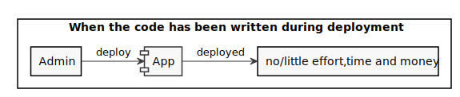
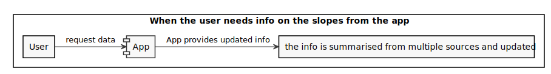
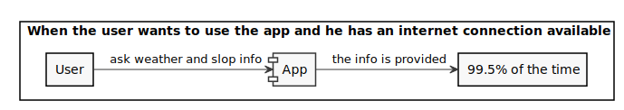
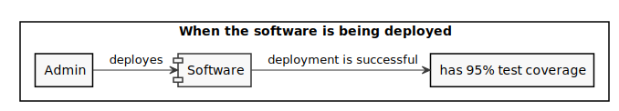
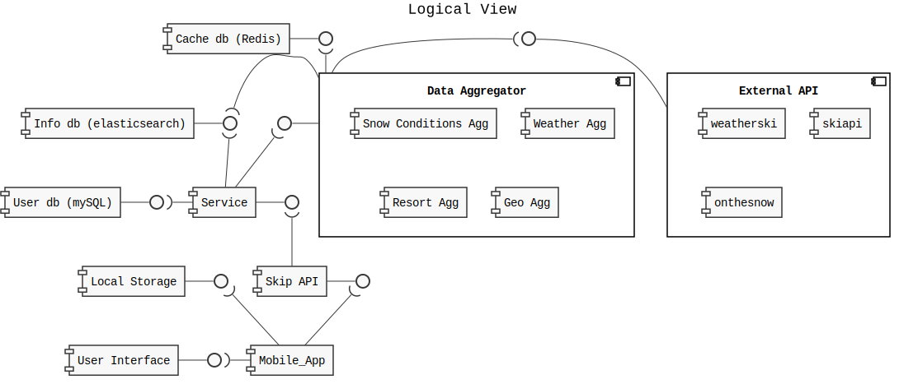
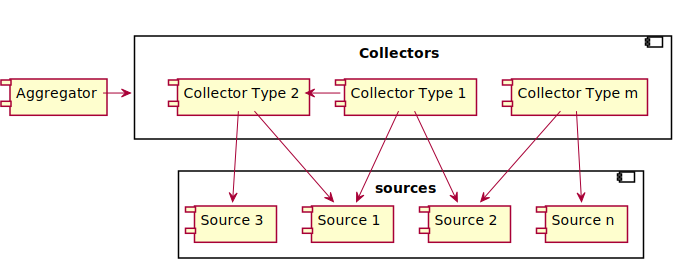
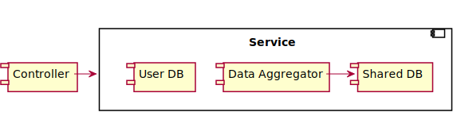
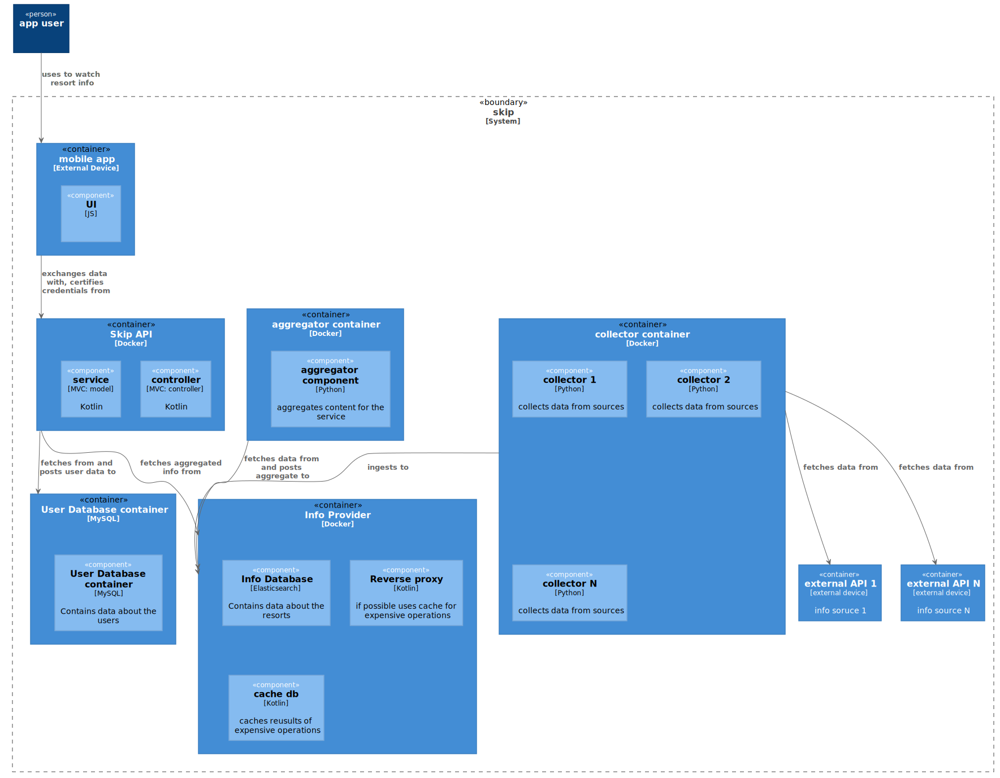

Getting started
You will use Markdown and PlantUML to describe a software architecture model about your own project.
This document will grow during the semester as you sketch and refine your software architecture model.
When you are done with each task, please push so we can give you feedback about your work.
We begin by selecting a suitable project domain.
1. Domain Selection
Submit the name and brief description (about 100 words) of your domain using the following vision statement template:
For [target customers]
Who [need/opportunity/problem]
The [name your project]
Is [type of project]
That [major features, core benefits, compelling reason to buy]
Unlike [current reality or competitors]
Our Project [summarize main advantages over status quo, unique selling point]
Please indicate if your choice is:
- a project you have worked on in the past (by yourself or with a team)
- a project you are going to work on this semester in another lecture (which one?)
- a new project you plan to build in the future
- some existing open source project you are interested to contribute to
The chosen domain should be unique for each student.
Please be ready to give a 2 minute presentation about it (you can use a slide but it's not necessary)
Project Name: My Project
Project Type:
Vision Statement:
Additional Information:
#::::::::::::::::::::::::::::::::::::::::::::::::::::::::::::::::::::::::::::::
For skiers Who are deciding where to spend their day The Skip app Is an application for mobile devices That allows skiers upload and visualize information ubout the current state of the slopes. Unlike companies that manage the slopes Skip provides its users with unbiased information on the state of the snow. There are websites that host reviews of ski resorts but those are permanent reviews and likely not based on the present snow conditions. Skiers may also use forums to monitor the snow conditions (ex: https://www.skiforum.it/board/index.php?threads/55613/page-1966) but this requires the user to sift trhough multiple messages in the hopes of finding the information he needs Our Project provides information and up to date data on the ski resorts close to the user at a glance. This information is provided by users through a quick submission designed to be compiled in less than 30s. Reviews by users are weighted based on how recent they are and expire after a while so that the information on the slopes is always up to date.
2. Architectural Decision Records
Software architecture is about making design decisions that will impact the quality of the software you plan to build.
Let's practice how to describe an architectural decision. We will keep using ADRs to document architectural decisions in the rest of the model.
Use the following template to capture one or more architectural design decisions in the context of your project domain
Architectural Decision Record Template
ADR #0 (Template)
- What did you decide?
Give a short title of solved problem and solution
- What was the context for your decision?
What is the goal you are trying to achieve?
What are the constraints?
What is the scope of your decision? Does it affect the entire architecture?
- What is the problem you are trying to solve?
You may want to articulate the problem in form of a question.
- Which alternative options did you consider?
List at least 3 options
- Which one did you choose?
Pick one of the options as the outcome of your decision
- What is the main reason for that?
List the positive consequences (pros) of your decision:
- quality improvement
- satisfaction of external constraint
If any, list the negative consequences (cons)
- quality degradation
3. Quality Attribute Scenario
Pick a scenario for a specific quality attribute. Describe it with natural language.
Refine the scenario using the following structure:

Stimulus: condition affecting the system
Source: entity generating the stimulus
Environment: context under which stimulus occurred (e.g., build, test, deployment, startup, normal operation, overload, failure, attack, change)
Response: observable result of the stimulus
Measure: benchmark or target value defining a successful response
Example Scenario
Quality: Recoverability
Scenario: In case of power failure, rebooting the system should take up to 20 seconds.

#::::::::::::::::::::::::::::::::::::::::::::::::::::::::::::::::::::::::::::::
ADR #1
- What did you decide?
Which platform should Skip run on.
- What was the context for your decision?
We want to guarantee Skip users a good compromise of usability and utility at a reasonable development cost.
The application should be as immediate as possible to access and push users to give updates on the conditions of the slopes.
Another important factor to keep in mind is the 'effort' that would be required from the users part to start using the application for instance using a web app doesn't require any installations.
This is a key decision that affects the marketing and design architecture of the whole software:
From a coding perspective programming languages available across platforms are not the same. We also need to keep in mind that available computing power vastly differs platform to platform
Best UI practices vastly differs on different platforms for instance a phone has a smaller screen size and ratio compared to a desktop PC
There are revenue consequences based on these decisions, for instance mobile app stores will take a portion of our profits but at the same time offer a more ample access to the marketing
- What is the problem you are trying to solve?
What's the best way for users to access our service?
- Which alternative options did you consider?
- Web app
- Mobile app
- Desktop
- Mobile + Desktop
- Which one did you choose?
Mobile
- What is the main reason for that?
Users need an interface to quickly access the applicable features and give updates on the condition of the snow while on the slopes. Given most users will go skiing with their smartphones rather than their computers we need to make the app available on them. We can do so either via web app or mobile application, web apps tend to be hard to use while on the snow so we need at least mobile app.
The application doesn't feature complex user interactions that would justify the need of a desktop version. We also need to consider that a user from a Desktop might use the app to evaluate the condition of the slopes but likely won't come back home to open it again to provide feedback on their conditions which is something our application needs.
PROS:
- not developing also a Desktop app saves component
- the app store gives a large market access on the fly
- the application will be easily accessible while skiing
- it's easier to have a good design on a mobile app rather than a web apps
CONS:
- revenue cut by app stores
- users without a smartphone won't be able to access the application
- more effort required from the users part to start using the application compared to a web app
- more expensive to develop a web app compared to a mobile one
ADR #2
- What did you decide?
Which mobile OS should the application run on?
- What was the context for your decision?
We want our application to be accessible to the largest possible amount of users. We need to consider that developing an app on multiple OS has a considerable impact on developing costs. Different technologies are available on different OS so this choice will impact our code.
- What is the problem you are trying to solve?
How can we make the application available to a large portion of our potential users without a heavy impact on its usability and development costs?
- Which alternative options did you consider?
- Android
- IoS
- X-platform
- (Android & IoS) native
- Which one did you choose?
X-platform
- What is the main reason for that?
Excluding on of the OS would cut out a significant portion of our users as currently the split between Android/Apple devices is roughly 7:3. A x-platform solution allows to access both markets while at the same time not bloating maintenance and development costs. The tradeoff is in usability.
PROS:
- access to nearly all potential users
- less expensive compared to a native solution
CONS:
- more expensive compared to a single OS solution
- no access to native OS specific features
ADR #3
- What did you decide?
Which framework to use to implement the X-platform app.
- What was the context for your decision?
Developing the application with a feature rich and reliable framework will reduce costs and deliver a better product.
Programmers need to be able to work with the framework thus either they are already comfortable with it or they will need to learn how to use it.
This decision has an impact on the code design.
- What is the problem you are trying to solve?
How can we make our app as easy to implement as possible?
- Which alternative options did you consider?
- React native
- Flutter
- Which one did you choose?
Not enough information to pick one yet. Further options need to be explored.
- What is the main reason for that?
//
ADR #4
- What did you decide?
How we should gain money from the application
- What was the context for your decision?
We need to make a profit from our application.
We need to consider that certain solution will impact the amount of users of the application (ex: making the app paid) or impact the usability (ex: aggressive ads)
This decision is a marketing one but might slightly impact UI design and code if we want to add ads to the application. For donations we will need to implement a secure way to send them code-wise.
- What is the problem you are trying to solve?
How can we profit from the application?
- Which alternative options did you consider?
- paid application
- free application with ads
- free application with donations
- Which one did you choose?
free application with ads
- What is the main reason for that?
An application can only be paid if it offers a service indispensable for the user while at the same time being by far the best product available on the market (ex: photoshop). Users will be very shy to download a paid app on the a mobile store in part given the fierce competition on it. That being said making the app paid would surely reduce the amount of users in turn reducing the amount of snow updates we get from them.
At the cost of some usability ads can provide a steady flow of revenue without the big barrier on the download an initial payment would be. We could also consider the option to remove ads with a payment.
Donations don't impact the usability of the app but likely don't provide enough revenue. More research would be needed on this topic to confirm it as there seem to be conflicting opinions on the topic.
PROS:
- steady flow of revenue
- no download barrier
CONS:
- usability tradeoff
- need to change UI to fit ads
ADR #5
- What did you decide?
How to incentivise users to give snow updates
- What was the context for your decision?
We want users to provide as much updates on the condition of the snow as possible to offer consistent and up to date reports.
We can't make the feedback too long or invasive or users won't compile it.
The incentives can't heavily impact the profits of our application.
This is a marketing decision with a minor impact on the code of the application albeit way to give incentives will have to be implemented.
- What is the problem you are trying to solve?
Users might not provide updates if they don't feel they gain something from it. At the same time an incentive perceived as too large might prompt them to leave fake updates
- Which alternative options did you consider?
- no incentives
- small payment
- lottery
- Which one did you choose?
lottery
- What is the main reason for that?
By providing no incentives it would be up to the user's goodwill to leave updates which might still happen (reviews exist even if no one gets paid for them).
We could issue small payment to users for their updates but these payments would be so small in order to still manage to make a profit off the app that users might perceive them as a 'job' they are not getting paid enough to do.
A lottery of ski related items might be the best options since it doesn't cost much compared to the perceived value from the user's part and might also introduce the fun factor.
PROS:
- incentive for the users
CONS:
- lotteries have to abide legal regulations
- lottery still impacts operating costs albeit in a minor way
- it might incentivise users to leave fake updates. A countermeasure needs to be designed.
4. Quality Attribute Tradeoff
Pick a free combination of two qualities on the map and write your name to claim it.
Then write a short text giving an example for the tradeoff in this assignment.
#:
Example Scenario 1
Quality: Affordability , Portability , Deployability
Scenario: The code written for the application is compatible with both Android and IoS with none or relatively trivial changes costing little effort, time and money to be deployed on both OS at the same time once the code is written.
Example Scenario 2
Quality: Interoperability , Usability
Scenario: The software should be able to fetch data from multiple weather APIs in order to provide users with reliable data over a vast amount of locations. The fetching and elaboration of this data to a usable summary should be done server side for efficiency and speed. Our server should act as an adaptor over the whole data for the application.
Example Scenario 3
Quality: Usability , Performance
Scenario: The survey the user completes to provide the us with updates on snow conditions should on average take less than 30s to complete.
Example Scenario 4
Quality: ? maybe it's functional ?
Scenario: The application should be able to store a snow update in case of poor connection (as often is on the slopes) for at least a few hours and send the data later to our server without having the user compile another snow update.
Example Scenario 5
Quality: Availability
Scenario: The application should have an uptime of at least 99.5% for weather and slope info assuming a connection is available.
Example Scenario 6
Quality: Deployability , Maintainability
Scenario: The whole software (app + server) should have a test coverage of at least 95% when deployed and for its whole lifecycle.
Without said requirement an automatic pipeline should fail the deployment.
Example Scenario 7
Quality: Visibility , Maintainability , Privacy
Scenario: When the service of the App is not available the application should show the user a clear message stating the reason. If the reason is a fault in the software a log should be sent to the developer not containing sensible user data.
5. Feature Modeling
In the context of your chosen project domain, describe your domain using a feature model.
The feature model should be correctly visualized using the following template:
If possible, make use of all modeling constructs.
#:::::::::::::
6. Context Diagram
Prepare a context diagram to define the design boundary for your project.
Here is a PlantUML/C4 example to get started.

Make sure to include all possible user personas and external dependencies you may need.
7. Component Model: Top-Down
Within the context of your project domain, represent a model of your modular software architecture decomposed into components.
The number of components in your logical view should be between 6 and 9:
- At least one component should be further decomposed into sub components
- At least one component should already exist. You should plan how to reuse it, by locating it in some software repository and including in your model the exact link to its specification and its price.
- At least one component should be stateful.
The logical view should represent provide/require dependencies that are consistent with the interactions represented in the process view.
The process view should illustrate how the proposed decomposition is used to satisfy the main use case given by your domain model.
You can add additional process views showing how other use cases can be satisfied by the same set of components.
This assignment will focus on modularity-related decisions, we will worry about deployment and the container view later.
Here is a PlantUML example logical view and process view.


#:
Logical View
Process Views
"Data aggregator" and "External API" sub-components are not connected.
8. Component Model: Bottom-Up
Within the context of your project domain, represent a model of your modular software architecture decomposed into components.
To design this model you should attempt to buy and reuse as many components as possible.
In addition to the logical and process views, you should give a precise list to all sources and prices of the components you have selected to be reused.
Write an ADR to document your component selection process (indicating which alternatives were considered).
|
|
ADR #1
- What did you decide?
What language and framework should the app use for the backend?
- What was the context for your decision?
The choice of language that can scale well to write medium to large sized applications and a well maintaned and usable framework will make the application more maintainable, increase reliability (less bugs) and likely reduce our time to market so it's a key decision.
- What is the problem you are trying to solve?
Writing programs is hard with the wrong technology so we want to pick the proper one.
- Which alternative options did you consider?
- Java + Spring
- Kotlin + Spring
- Kotlin + Ktor
- JS + Express
- Which one did you choose?
Kotlin + Spring
- What is the main reason for that?
JS is very bug prone and while being a very quick solution for small scale applications it doesn't scale well beyond that.
Java has consinstently proven itself to be a good language to develop sstable backend and Spring is also a well tested framework in that regard.
While certainly being a solid language Java starts to show signs of its age and due to retrocompatibility concerns it never solved some of its core issues (ex: null management)
Kotlin offers a more modern approach to OOP and is completely Interoperable with Java so the transition to it shouldn't be traumatic for most programmers.
Ktor is a more modern framework but on the other hand it doesn't have the same amount of material on it as we can find about Spring nor it's as easy to find people with knowledge about it.
PROS:
- Kotlin is a statically typed language which will reduce the potential for bugs compared to JS
- Kotlin solves key issues of Java such as excessive verbosity and null management
- Spring is a well tested framework with lots of material on its usage
CONS:
- Developing a backend in Kotlin might be slower than JS
- Ktor is a more modern and less verbose framework
- Some programmers might initially be confused about some Kotlin features
PRICINGS:
Every software is free beside hardware costs. Using the following external APIs:
Subscription plan for 1k requests/day available for 10USD then 10USD/1k requests.
https://openweathermap.org/api Free up until 1k requests/day then 10USD/1k requests.
http://docs.clientservice.onthesnow.com/docs/getting_started.html
Free
9. Interface/API Specification
In this iteration, we will detail your previous model to specify the provided interface of all components based on their interactions found in your existing process views.
choose whether to use the top down or bottom up model. If you specify the interfaces of the bottom up model, your interface descriptions should match what the components you reuse already offer.
decide which interface elements are operations, properties, or events.
Get started with one of these PlantUML templates, or you can come up with your own notation to describe the interfaces, as long as it includes all the necessary details.
The first template describes separately the provided/required interfaces of each component.

The second template annotates the logical view with the interface descriptions: less redundant, but needs the logical dependencies to be modeled to show which are the required interfaces.

10. Connector View
Extend your existing models introducing the connector view
For every pair of connected components (logical view), pick the most suitable connector. Existing components can play the role of connector, or new connectors may need to be introduced.
Make sure that the interactions shown in the process views reflect the primitives of the selected connector
We have split the connector view in two sections:
Here is up to the "Data Aggregator" component
Here's the Data aggregator section:

For the "Data aggregator" we are using a shared DB connector as explained with the following ADR:
ADR
- What did you decide?
How the components fetching data for the backend SKIP should be connected
- What was the context for your decision?
We have different data sources that are processed to produce different types of data by collectors which is then aggregated. Ideally this would not be necessary but some collectors need to access data collected by other collectors. For instance the weather collector needs the list of resorts he needs to get the weather for. Below a graph representing the situation:
- What is the problem you are trying to solve?
We want to avoid a potentially large processing time to be felt by users.
We want the coupling between the various collectors to be as loose as possible.
We want a flexible way to manipulate the ingested data.
- Which alternative options did you consider?
- Procedure Call
- Bus
- Shared DB
- Which one did you choose?
Shared DB
- What is the main reason for that?
With a shared DB each collector is only coupled with the shape of the data he needs to work with and doesn't need to directly communicate with other components (with a procedure call we would have instead a very tigh coupling). Due to the loose coupling we can easily scale our collectors to use multiple sources and just need to provide appropiate adapters.
A shared DB can support mutual dependencies between two collectors as the data will eventually converge with time. We also don't need to worry about potential cascading updates that could be caused by one collector updating its data (as would happen with a Bus).
A shared DB can potentially support very expressive queries if needed by the collectors.
A shared DB allows to store collectors to store history if needed.
Data in a shared DB can be queried and analyzed outside of the application if needed by the developpers.
With the newly adopted connector we have turned the aggregation and collection of data into an active task to avoid the user having to wait for it.
This comes at the cost of more processing and calls required for potentially unneeded data but we believe it to be worth the tradeoff.
The following process view shows the work behind a call to the API, as we cant observe updates happen independently:
11. Adapters and Coupling
- Highlight the connectors (or components) in your existing bottom-up design playing the role of adapter. (We suggest to use the bottom-up design since when dealing with externally sourced components, their interfaces can be a source of mismatches).
- Which kind of mismatch** are they solving?
- Introduce a wrapper in your architecture to hide one of the previously highlighted adapters
- Where would standard interfaces play a role in your architecture? Which standards could be relevant in your domain?
- Explain how one or more pairs of components are coupled according to different coupling facets
- Provide more details on how each adapter solves the mismatches identified using pseudo-code or the actual code
- How can you improve your architectural model to minimize coupling between components? (Include a revised logical/connector view with your solution)
** If you do not find any mismatch in your existing design we suggest to introduce one artificially.
Hints
(1) Should we find cases where two components cannot communicate (and are doing it wrongly) and highlight they would need an adapter?, or cases where we have already a "component playing the role of adapter in the view" and highlight only the adapter?
Both are fine. We assumed that if you draw a dependency (or a connector) the interfaces match, but if you detect that the components that should communicate cannot communicate then of course introduce an adapter to solve the mismatch
(2) Please show the details about the two interfaces which do not match (e.g., names of parameters, object structures) so that it becomes clear why an adapter is needed and what the adapter should do to bridge the mismatch
(5-6) These questions are about the implications on coupling based on the decisions you documented in the connector view. Whenever you have a connector you couple together the components and different connectors will have different forms of coupling
For example, if you use calls everywhere, do you really need them everywhere? is there some pair of components where you could use a message queue instead?
Regarding the coupling facets mentioned in question 5. You do not have to answer all questions related to "discovery", "session", "binding", "interaction", "timing", "interface" and "platform" (p.441, Coupling Facets). Just the ones that you think are relevant for your design and by answering them you can get ideas on how to do question 6.
1-2
In this project we are using both adapters implemented by us and others externally sourced.
The most prominent mimatch we find in our project is derived by the fact that we are collecting data from different sources and have to reshape it for our needs. Despite the components not communicating directly as they use a shared database connector they still serve the role of adapting data, if not through their interface by the way they ingest it in the shared database.
Each combination of data type and source needs its own adapter with knowledge on how to retrive it and reshape it.
The following view (from ex10):

becomes with adapters:
We have omitted the shared database to better show the role of the connectors. Adding it in we have the following:
The DataAggregator component is another adapter which queries the database and
converts the ingested data into a shape closer to what the client needs. For instance
an heatmap view (based on a specific criteria such as reviews, weather, affluency...)
or information about a specific resort. Clearly we can't expect the client
to analyze our database to extract the data he needs thus somewhere this missmatch
must be solved and the DataAggregator is the component serving that purpose.
Our "Redux Actions" component in the mobile application is an adapter masking resquests to APIs and local storage and in general handling UI requests. A method of its interface could for instance be
dispatchShowHeatMapOverview()
which would fetch the required data through our Skip API and dispatch an action to update our redux store accordingly. More than solving a missmatch it seperates the concern of having to deal with HTTP requests and actions on the local storage from the UI.
Our Service component in the backend is an adapter tasked with using the various
databases and the DataAggregator component to provide actions close to what
our controller needs. For instance if the API is requested to handle a new
update on the snow conditions by one of our users the controller
will simply make a call along the lines of:
service.addSnowUpdate(snowInfo)
once validated the user credentials. Again more than solving a missmatch this component
separates concerns according to the ModelViewController pattern providing a simplified
interface for the controller to access (thus being a facade).
Other examples of adapters are the ones implemented by the libraries we use to connect with our database both on the front and backend. Different databases have different interfaces and, if possible, we don't want to deal with them directly. Our service layer should not change whether we use Postgress, MySql or SQLite.
3
The backend Service component can be considered a wrapper around the business
logic of our backend since the controller doesn't have to be aware of any components
used by it.
A view of it as follows:
wouldn't be entirely accurate since the databases runs independently. We can't represent them as part of the service but the controller is not aware of that...
In general every API could be considered as a wrapping facade since it adapts functionality we don't see the implementation of to an interface.
4
HTTP
We are implementing a REST API for our application and are also using externally sourced APIs which will have to conform to HTTP specifications.
SQL
We are using a SQL database to store data about our users. SQL is one of the most used DSL for queries.
GeoJson
We will need to work with geographic data and GeoJson is the most common data model used for it.
5
We are looking at the facets of the following coupling:

Binding
Binding between the two components is done at design-time. The mobile application works by communicating with a back-end we design.
Discovery
Discovery happens at deployment time likely in the form of an environment variable with the url and credentials to access our API.
Session
The backend API will conform to the REST specification (with a possible exception made to manage authorization tokens which might expire for security reasons after some time) so each message will be treated independently from each other.
Interaction
The components are connected via a web connector so the connetion is
obviously remote.
Timing
Both components must be running in order to exchange data.
Interface
Any change in the API will potentially break the mobile app.
Platform
No. The backend is running remotely so, as long as there are no interface changes, the mobile app won't be aware of a platform change.
6
As mentioned before we need multiple adapters for the various sources of data since each API will have its own data model.
For instance let's say we need the weather of a location:
A request to openweathermap will look as follows:
https://api.openweathermap.org/data/2.5/weather?q=Cortina,ita&appid={API key}
and will result in a response that looks like
{
"coord": {
"lon": -0.13,
"lat": 51.51
},
"weather": [
{
"id": 300,
"main": "Drizzle",
temp": 282.55,
"feels_like": 281.86,
"temp_min": 280.37,
"temp_max": 284.26,
"pressure": 1023,
"humidity": 100
"description": "light intensity drizzle",
"icon": "09d"
}
],
...
"wind": {
"speed": 4.1,
"deg": 80
},
"clouds": {
"all": 90
},
...
"id": 2643743,
"name": "Cortina",
"cod": 200
}
while a request to onthesnow will be as follows:
https://onthesnow.com/externalservice/resort/{resortId}/{N}/day/forecast
and will result in a response that looks like:
{
...
currentWeather": {
"snowfall": 0,
"is_reported": true,
"is_forecast": false,
"tempTopMax": -10,
"tempTopMin": -10.9,
"tempBottomMax": -3.6,
"tempBottomMin": -4.6,
"tempTop": -6.7,
"tempBottom": -6.7,
"weatherSymbol": "SUN",
"bottomWeatherSymbol": "SUN",
"surfaceTop": 2,
"surfaceBottom": 2,
"surfaceTopOffSlope": 0,
"surfaceBottomOffSlope": 0,
"forecastDate": "2014-02-24",
"lastModified": 1393225236,
"date": 1393200000,
"date_str": "2014.02.24 00:00:00 UTC",
"lastModified_str": "2014.02.24 07:00:36 UTC",
"date_local_str": "2014.02.24 00:00:00 UTC",
"date_local": 1393200000
},
...
}
as we can see both provide similar data but in a completely different data model. Our adapters will be tasked with converting this data to a common data model that the DataAggregator will be able to operate on.
As an example let's say that we want to work with weather data shaped as follows:
{
location: {
lat,
lon,
resortId,
resortName,
country
},
wind:{
speed
},
temperature:{
max,
min
},
date:{
timestamp,
},
mainType: "sun"|"rain"|"snow"
}
A weather collector will first need to fetch resort locations (these are already ingested by a separate collector in our DB) from the proper index of our database (js pseudocode):
asynch _getResorts(){
resorts = (await fetch("${env.get(ELS_URL)}/resort/_search", method="PUT", body={
query: {
match_all: {}
}
})).body.toJson().hits.hits
return resorts
}
then we have a method to get the weather from the resort info:
asynch _resortToResortWeather(resort){
rawResortWeather = (await fetch("https://api.openweathermap.org/data/2.5/weather?q=${resort.name},
ita&appid=${env.get("OWM_KEY")}, method="GET")).body.tojson()
return {
location: {
lat: resort.lat,
lon: resort.lon,
resortId: resort.id,
resortName: resort.name,
country: resort.country
},
wind:{
speed: rawResortWeather.wind.speed
},
temperature:{
max: rawResortWeather.weather[0].temp_max,
min" rawResortWeather.weather[0].temp_min,
},
date:{
timestamp: (new Date()).timestamp,
},
type: {Drizzle:"rain", Sun: "sun", Rain: "rain", Snow:"snow", "Cloud":"cloud"}[rawResortWeather.weather[0].main]
}
}
using onthesnow, beside the data model missmatch, we would have the additional issue of dealing with the fact that we store our own collection of resorts while they have theirs and requests to their weather API need the ids of their resorts. We could to slightly modify our method to enrich the resorts with onthesnow IDs.
asynch _getResorts(){
resorts = (await fetch("${env.get(ELS_URL)}/resort/_search", method="PUT", body={
query: {
match_all: {}
}
})).body.toJson().hits.hits
extResorts = (await fetch("https://onthesnow.com/externalservice/resort/", method="PUT")).body.toJson()
resorts = resorts.map(r =>{
oId = extResorts.filter(er=> er.name === r.name )[0]?.id
return oId? {...r, oId: oId}: null
}).filter(r=>!!r)
return resorts
}
then similarly:
asynch _resortToResortWeather(resort){
rawResortWeather = (await fetch("https://onthesnow.com/externalservice/resort/${resort.oId}/1/day/forecast,
ita&appid=${env.get("OWM_KEY")}, method="GET")).body.tojson()
return {
location: {
lat: resort.lat,
lon: resort.lon,
resortId: resort.id,
resortName: resort.name,
country: resort.country
},
wind:{
},
temperature:{
max: rawResortWeather.currentWeather.tempTopMax
min" rawResortWeather.weather[0].tempBottomMin,
},
date:{
timestamp: (new Date()).timestamp,
},
type: {Sun: "SUN", Rain: "RAIN", Snow:"SNOW", "cloud":"CLOUD"}[rawResortWeather.weatherSymbol]
}
}
after that we would have to repeat the process for all resorts:
ingest(){
resorts = await _getResorts()
weatherPoints = Promise.awaitAll(resorts.map(_resortToResortWeather))
body = weatherPoints.flatMap(wp => [{index:{}}, wp]).map(x => JSON.stringify(x)).join("\n")
fetch("${env.get(ELS_URL)}/weatherPoints/_bulk", method="POST", body=body)
}
once this collected data is ingested in the various indexes it can then be used by the DataAggregator component.
7
All the couplings in the mobile application are quite straightfoward already. The
only component with more than one coupling is Redux Actions, this component has
the responsability of handling requests from the UI and perform fetches if necessary.
To handle the possible outcomes of a request we perform them one after the other
as shown in the process view of ex 8:

removing coupling between this component and the "LS Service" or the "Skip API" would just make interactions more convoluted. The coupling between it and the "Redux Store" is not direct as we communicate with it through the dispatch function. It is perhaps similar to a bus connector.
Moving onto the API:
We are using a shared DB for the various types of data and have all the collectors adapters access it as active components to ingest data instead of having another component call them :this only makes them coupled to the shape of the data they need to read and write so we can't make it looser.
The backend "Service" component is coupled with the DataAggregator,
the User db and the Info db: we could turn the DataAggregator into an active
component writing directly to the Info db. At this point the coupling between
the DataAggregator and Service component would be cut. On the other hand moving
the cache from the control of the now active DataAggregator would be necessary:
we can proxy the fetch function to use a cache when calling our Info db
(or as a simpler approach just use a dedicated call to access it).
We would end up with the following connector view:
the proxy caller component could follow a very simple approach to maintain
the cache which is to assume POST calls to our database are write operations
(and the relevant index cache should be invalidated) while GET are always
read operations.
12. Physical and Deployment Views
a. Extend your architectural model with the following viewpoints:
Physical or Container View
Deployment View
Your model should be non-trivial: include more than one physical device/virtual container (or both). Be ready to discuss which connectors are found at the device/container boundaries.
b. Write an ADR about which deployment strategy you plan to adopt. The alternatives to be considered are: big bang, blue/green, shadow, pilot, gradual phase-in, canary, A/B testing.
c. (Optional) Prepare a demo of a basic continuous integration and delivery pipeline for your architectural documentation so that you can obtain a single, integrated PDF with all the viewpoints you have modeled so far.
For example:
- configure a GitHub webhook to be called whenever you push changes to your documentation
- setup a GitHub action (or similar) to build and publish your documentation on a website
Container view
Deployment view
Deployment strategy ADR
- What did you decide?
What protocol skip should use to release a new version.
- What was the context for your decision?
New releases are a critical moment in the life of an application, a bad release can easily cause users to migrate to competitors. At the same time users expect applications to improve over time and might not even agree that new features are improvements.
- What is the problem you are trying to solve?
We don't want to compromise the availability and reliability of our application when releasing a new version. At the same time we want to avoid spending a major amount of resources if possible.
- Which alternative options did you consider?
- canary
- shadow
- gradual pahse-in
- A/B
- Blue/Green
- Big Bang
- pilot
- Which one did you choose?
- front-end: canary -> gradual phase-in
- back-end: canary
- What is the main reason for that?
We want to give users some flexibility to update their application, at the same time we don't want to confuse them with ulterior options to rollback their changes and, at some point, we want all of them to move to the new version.
A gradual phase-in (obviously preceeded by testing with pilots) adapts quite well to this requirements and doesn't need us to develop extra infrastructure. A deployment with a canary approach might still be risky as canary users might carry some bias which is why we complement it with a gradual phase-in.
The A/B method could be emplyed if there are strong doubts between two differently designed versions of our applications but it might prove to be expensive to enact and should be used carefully.
For the backend we are mostly interested in the fact that new updates won't contain bugs and break the application so even users with biases will still work which is why we go with a canary approach. With more resources we could compare results users obtain from the new API with the old one via a shadow approach but it would likley require tons of extra work.
Demo
This document is deployed on:
https://usi-msde-sa-2022.github.io/software-architecture-model-Tripparsugo/
by the .github/workflows/deploy_on_pages.yaml github action.
13. Availability and Services
The goal of this week is to plan how to deliver your software as a service with high availability.
- If necessary, change your deployment design so that your software is hosted on a server (which could be running as a Cloud VM). Your SaaS architecture should show how your SaaS can be remotely accessed from a client such as a Web browser, or a mobile app
- Sketch your software as a service pricing model (optional)
- How would you define the availability requirements in your project domain? For example, what would be your expectation for the duration of planned/unplanned downtimes or the longest response time tolerated by your clients?
- Which strategy do you adopt to monitor your service's availability? Extend your architecture with a watchdog or a heartbeat monitor and motivate your choice with an ADR.
- What happens when a stateless component goes down? model a sequence diagram to show what needs to happen to recover one of your critical stateless components
- How do you plan to recover stateful components? write an ADR about your choice of replication strategy and whether you prefer consistency vs. availability. Also, consider whether event sourcing would help in your context.
- How do you plan to avoid cascading failures? Be ready to discuss how the connectors (modeled in your connector view) impact the reliability of your architecture.
- How did you mitigate the impact of your external dependencies being not available? (if applicable)
1
Our backend can already be hosted on a separate server as is. The connector view won't change since we are using a web connector.
2
We could make our application subscription-based however this would heavily impact the amount of users that would use it. We would also obtain less data about waiting times and quality of the snow on the slopes.
Instead of putting a price on our service we believe the best solution to be ad-based monetization as the vast majority of apps on mobile stores does.
3
Clearly the higher the availability of a service the better with that being said we don't have high availability requirements as a medical application or a service for an enterprise would have.
If possible it would be preferable if the downtime were to be distributed during low usage preriods (such as the night or outside the skiing season).
Since our application would not need to perform many requests even a relatively high response time of a few seconds would still be tollerable if aptly masked by the UI of the app (ex: show some cute mascotte or a fake loading bar while waiting for the response). Realistically we should be able to receive a response within 1.
Since the service is offered for free we would expect our user to have a higher tollerance for unplanned downtime yet longer ones (more then a few minutes) would lead users to perceive our application as unreliable and possibly part from it. A few occurrencies of longer downtime might be accepted even during periods of high usage but we should attempt to avoid that as much as possible.
Downtime due to planned maintenance should rarely occour as we could just redirect the requests of our users to an older version of the API. Were it needed it should be done during times of low usage when would barely affect any users.
4
ADR #1
- What did you decide?
What system we should use to detect the availability of our service.
- What was the context for your decision?
Our application uses multiple services that could experience downtime.
- What is the problem you are trying to solve?
We want to monitor the availability of our services and external API, we use to act occordingly if something is not working to fix it as soon as possible.
- Which alternative options did you consider?
- watchdog
- heartbeat
- Which one did you choose?
watchdog
- What is the main reason for that?
With a watchdog we don't need to add extra code to our services and we will be also able to monitor their response time which is important to avoid compromising the usability of our mobile app.
5
The watchdog will manage issues with the system differently, in case of a response not received from the service it will attempt to restart the component (we assume the watchdog to have priviledge access to the container running the service in order to order a reboot). If that doesn't solve the problem its only recourse would be to send a message to an admin. We use multiple watchdogs to monitor each other.
The system will be connected as follows:
6
ADR #1
- What did you decide?
What replication strategy to use for our databases.
- What was the context for your decision?
It's impossible to have a database with all the following properties:
- partition tollerance
- consinstency
- availability
we have to decide what is is priority in our system and follow with an adequate replication strategy for our database.
- What is the problem you are trying to solve?
Since we need a distributed database in order to scale our application we need to balance out availability and consistency in the best way possible for our users.
- Which alternative options did you consider?
- no replication
- synchronous replication
- asynchronous replication
- Which one did you choose?
user db: synchronous replication
info db: asynchronous replication
- What is the main reason for that?
We need to maintain consistency over our user database: if a user changes his password we can't have the old one possibly working after confirming the change. Only a few requests should be sent to this database so resulting slower response time shouldn't be an issue.
For our info database eventual consinstency is enough, even if we don't provide data from the latest state of our database there will be no issues. Since lots of writes are performed on this database synchronous replication would significantly hamper its performance. By default elasticsearch is a AP database.
Event sourcing with elasticsearch would be very expensive especially when considering we might want to prune some data regularly (ex: we don't need to keep every weather forecast especially after the day has passed and we have the actual data for it).
Event sourcing is eventually consistent so we exclude it for our user db.
7
We can already tollerate failures from the external API we use. If the API fails we can't provide any usefult service from our mobile application so it will inevitably fail.
Since our components communicate through a shared database its failure would make them unable to continue operating, we could use a circuit breaker to avoid keep sending requests to it or put the systems on hold after a certain amount of failures happen within a determinate timeframe.
8
We are using external sources to fetch some of the data we need. If some experienced
downtime we could still offer older information already fetched and ingested from them
in the past. There is also some redundancy: we can get our weather both from openweathermap.org or onthesnow.com
so if one went down we would still be able to serve a forecast on most resorts.
14. Scalability
Now that your architecture delivers your software as a service, let's redesign it so that it can scale!
Pick one scalability dimension: number of clients, size of input, size of state, number of dependencies
How well does your architecture scale along the chosen dimension? Where do you expect the bottleneck to be?
Modify your architecture to remove the scalability bottleneck you have identified (show both logical, process and deployment view) - consider whether the API/interface of the bottleneck component should be improved.
Write an ADR regarding the scalability pattern you have introduced.
Write an ADR regarding the issue of component discovery, choosing one of the alternatives: dependency injection vs. directory. Can you identify an existing component playing the role of directory/dependency injection container? Could you give an example of where you would need to add such component to facilitate dynamic component discovery?
1
number of clients since it's most likely the one that could cause issues in our system.
2
At the moment it doesn't as there are a few potential bottlenecks:
The API would fail to serve a large number of clients since it's a single instance The API is a stateless service so we can easily horizontally scale it by having multiple instances of it accessed through a load balacer. The standard DNS service can already be configured to act as a load balancer so this would solve the related issue which would work also if we were interested in making our application available via browser in the future. Otherwise we could just add our own load balancer on top of it Assuming the load balancer itself could become a bottleneck an alternative would be to perform "load balancing" on the client side based perhaps on a mapping between location and IP of the API, that seems excessive as a load balancer can scale vertically very efficiently.
While elasticsearch is by design horizontally scalable the we have put a reverse proxy to use a cache on top of it which could have consequences on the scalability of the system. We could use the already existng reverse proxy as a load balancer but this proxy has already the task of using a cache which would prevent it from being a hardware based load balancer. At this point the best option would likely be to add a dedicated load balancer for the various nodes and move instead the cache on the API.
An advantage of having a proxy on top of all our requests to es was that we could invalidate it once a write was seen, on the API we would instead be forced to have a lower consinstency (ex: we could cache the information of a resort for a certain duration no matter what happens in our db, this would significantly reduce the needed requests to our dbs).
- At the moment the userDB is a single instance SQL-based DB which could struggle with many writes For the user db MySQL Cluster is a solution adopted by many companies with high need for scalability and consinstency like facebook. Similarly to the previous point we could also use a load balancer here to split the traffic between the various nodes.
3
Logical view (arrow notation):
Deployment view: it remains unchanged since all components needing a load balancer were already structured as independent services.

Process view: all our load balancers work in the following way:
4
- What did you decide?
What patterns we should use to scale our application to accomodate a larger number of users
- What was the context for your decision?
We want our system to accomodate a larger number of clients but it's not always possible simply pick a more powerful machine (scaling up). Often doubling our resources in this manner does not double the throughtput of our service which is way modern architerctures usually need to be able to scale out to multiple machines.
- What is the problem you are trying to solve?
We don't want the application to fail to perform due to a large number of concurrent requests from our users.
- Which alternative options did you consider?
- Sharding
- Load balancing
- Master/worker
- Which one did you choose?
Load Balancing + Sharding
- What is the main reason for that?
Master/worker pattern does not apply to our case as we don't have issues scaling our input nor would we have any straightfoward way to split our input.
We are explicitly using load balancers to redirect requests to one of the available nodes implementing our stateless API.
Sharding is the natural solution to scale out databases and most implementations also comes with internal load balancing between the nodes.
In the vast majority of cases solutions like MySQL cluster and elasticsearch will be able to support a very large number of requests with their own load balancer. That being said the node elected as load balancer by the db might still be insufficient so and unable to further scale up to forward the requests which is way we have added our own load balancer. An example for this type of solution is configuring ES to run using an external load balancer like Azure Resource Manager
5
- What did you decide?
What discovery solution to apply for our dependencies.
- What was the context for your decision?
In many cases software dependencies are dynamic: we know statically that our software needs a certain type of component but not which implementation might be available and where to get it.
- What is the problem you are trying to solve?
We don't want our software to fail because it doesn't know which component implementations are available and how to reach them.
- Which alternative options did you consider?
- Directory
- Injection
- Which one did you choose?
Directory
- What is the main reason for that?
DNS is a form of directory based load-balacing and we have no controll over that.
We are also using load balancers to scale out which work with a directory.
15. Flexibility
Only dead software stops changing. You just received a message from your customer, they have an idea. Is your architecture ready for it?
Pick a new use case scenario. Precisely, what exactly do you need to change of your existing architecture so that it can be supported? Model the updated logical/process/deployment views.
Pick another use case scenario so that it can be supported without any major architectural change (i.e., while you cannot add new components, it is possible to extend the interface of existing ones or introduce new dependencies). Illustrate with a process view, how your previous design can satisfy the new requirement.
Change impact. One of your externally sourced component/Web service API has announced it will introduce a breaking change. What is the impact of such change? How can you control and limit the impact of such change? Update your logical view
Open up your architecture so that it can be extended with plugins by its end-users. Where would be a good extension point? Update your logical view and give at least one example of what a plugin would actually do.
Assuming you have a centralized deployment with all stateful components storing their state in the same database, propose a strategy to split the monolith into at least two different microservices. Model the new logical/deployment view as well as the interfaces of each microservice you introduce.
1
Data collectors are one of the key components of our application: they retrive
the raw data we need and ingest it. Each of them uses a source of information
and converts the data to the mapping of we use for that type of data.
Some data might come from an external API while other from json
other types of file, the location of which could be local or remote.
Given we might potentially use tens or even hundreds of different sources a tool
to streamline the process of writing a collector, testing it and monitoring or
tweaking (ex: change activation timer on a collector) its function could prove to be useful.
We want to implement our own DSL to write a collector that is transpiled to
our implementation language. Programmers would still have the possibility to
write a collector manually. In practice we could simply have a directory containing
the collectors in our .ourdsl format and another where they get compiled
into .ourlang files.
Together with information about the collectors it would be usueful to have a platform to monitor the state of our application.
Some of the active components of our application write to our database and we could query the data written on it as a sort of pseudo-heartbeat monitoring however this would not be an effective strategy as:
The issue might be with the data source and not with our component, we need to distinguish the different cases
We might want to test how much time some of our components take to elaborate data and store this information over time. Perhaps a collector fetching from a particularly poor API isn't able to provide data consinstently which we might know about
Since we want to keep our components to keep operating alone we opt to turn them into passive components but add a manager on top of them which runs them at specified intervals of time or on request. In order to send these requests we add an API to manage and monitor the component.
Logical view:
Deployment view:
Process view 1, visualizing service availability:
Process view 2, writing and starting DSL collector:
3
For what concerns our data sources:
We have designed our system to witstand breaking API changes: each API has a different dedicated collector for each type of data we extract from it so that would be the only thing to rewrite. Writing a new collector should also be faster due to the dedicated DSL.
We have put in place a system to monitor issues of this type with the collector manager storing informations about the operation of each collector which are then made available to the developer through the dedicated API.
The application wouldn't suddently break but, at worse, potentially serve obsolete data if nothing better is available in the Information database.
We don't depend on other APIs at runtime and changes in those we use to deploy our services would be discovered at deployment time.